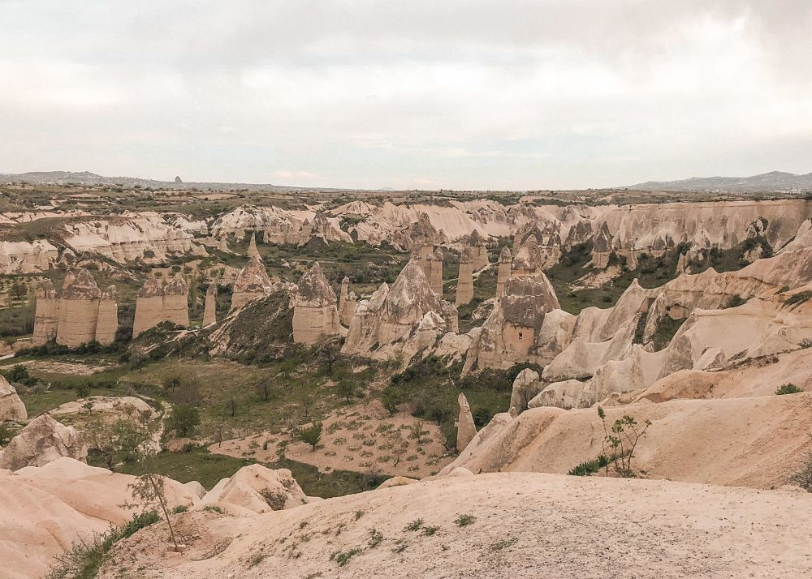
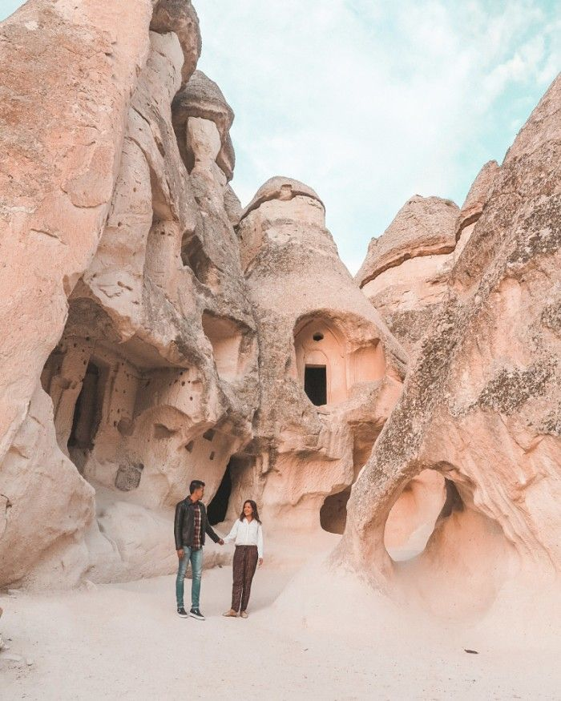
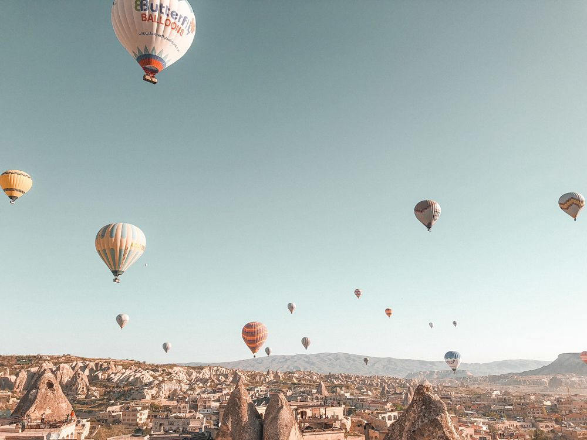

Capadocia
Capadocia (Kapadokya en turco) es una región situada en el centro de Turquía. Alberga las provincias de Kayseri, Nevşehir, Aksaray y Niğde. Es famosa por sus formaciones geológicas (en especial sus chimeneas de hadas), iglesias en cuevas, ciudades subterráneas y por ser un lugar idóneo para volar en globo. En este post quiero mostrarte los 10 imprescindibles que hacer y que ver en Capadocia, Turquía.

Miluska: Desde que descubrí este lugar, supe que el día que pisara Turquía no sería solo para visitar la preciosa ciudad de Estambul, sino que no me iría del país sin hacer un viaje a Capadocia. Había soñado con visitar Capadocia y llegó a superar mis expectativas. Capadocia es un lugar mágico y es difícil describir con palabras lo especial que es. Hay que ir y vivirlo en primera persona.
Algunos de los paisajes más bonitos que vi en Capadocia fue visitando el Valle de las Rosas y el Valle Rojo (Rose and Red Valleys). Están situados el uno al lado del otro, por lo que recomiendo preparar la visita a ambos lugares la misma mañana o tarde. La mejor manera de recorrer los valles es a pie. Hay varios trekkings que puedes seguir, de diferente duración. Verás que están señalizados pero mi consejo es que te hagas con un mapa de los valles antes de ir.
Un lugar que ver en Capadocia necesariamente es el Museo al Aire Libre de Göreme. Cuenta con varios monasterios situados uno junto a otro. Hay numerosas capillas cuyas paredes están cubiertas de frescos. Me parecieron precisas por dentro. Es una visita muy recomendable si quieres conocer en más profundidad cómo era el día a día de los que habitaron estos monasterios.
Otro lugar que me dejo boquiabierta en nuestro viaje a Cappadocia (Tuquía) fue Pasabag, conocido también con el nombre de Valle de los Monjes. Verás numerosos pilares de tierra y algunas de las chimeneas de hadas más altas. Suelen terminar en forma de cono y algunas de ellas está unidas entre sí. También se encuentra una capilla dedicada a San Simeon. No dejes de entrar dentro de las cuevas excavadas en las chimeneas, donde solían esconderse monjes.
Koza Cave Hotel. Tuve la suerte de alojarme en este hotel cuando visité Capadocia y me encantó. Las habitaciones son cuevas, lo que le da un ambiente muy auténtico al alojamiento. Cuentan con varias terrazas, una de ellas en la parte superior del hotel, desde la cual se puede ver el amanecer con todos los globos en el cielo. Cuentan con habitaciones dobles y triples. El desayuno está incluido y es muy bueno, con productos frescos y locales. Además, los dueños son un encanto. Es una opción muy buena donde alojarse en Capadocia.
Una de las experiencias más mágicas que puedes vivir en Capadocia es sobrevolar la región en uno de los muchos globos aerostáticos que despegan durante el amanecer. Algo que debes saber a la hora de organizar tu viaje a Capadocia es que no todas las mañanas se puede volar en globo. En principio los vuelos se ofrecen todas las mañanas pero algunos días los vuelos son cancelados debido a condiciones meteorológicas.
